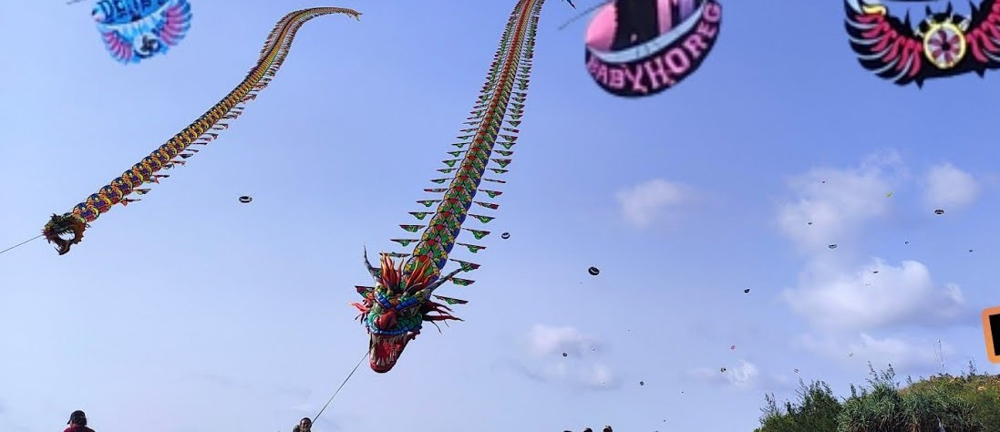

KembaliKreasi Langit Serit
Kreasi Langit Serit merupakan festival layang-layang yang diselenggarakan di kawasan Pantai Serit sebagai bentuk perpaduan antara wisata alam dan kreativitas masyarakat lokal. Kegiatan ini menampilkan berbagai jenis layang-layang dengan ukuran, bentuk, dan warna yang sangat beragam, sehingga menciptakan pemandangan langit yang penuh warna dan bergerak dinamis mengikuti arah angin laut.
Festival ini biasanya diadakan pada musim angin tertentu ketika kondisi cuaca di pesisir sangat mendukung untuk menerbangkan layang-layang. Hal ini membuat Pantai Serit menjadi salah satu lokasi yang ideal karena memiliki area terbuka luas dan angin yang stabil, sehingga layang-layang dapat terbang tinggi dan bertahan lama di udara.
Daya tarik utama dari Kreasi Langit Serit bukan hanya pada jumlah layang-layang yang diterbangkan, tetapi juga pada kreativitas para peserta dalam membuat desain. Ada layang-layang berbentuk hewan, karakter budaya, hingga bentuk modern yang dibuat dengan teknik khusus agar dapat terbang lebih stabil dan menarik secara visual.
Selain itu, festival ini juga sering dijadikan ajang perlombaan antar komunitas pecinta layang-layang dari berbagai daerah. Mereka saling menunjukkan keahlian dalam merancang, mengendalikan, dan mempertahankan layang-layang di udara selama mungkin. Kompetisi ini menambah semangat dan daya tarik acara bagi pengunjung.
Tidak hanya sebagai hiburan, Kreasi Langit Serit juga memiliki nilai edukasi dan sosial. Pengunjung dapat belajar mengenai teknik dasar pembuatan layang-layang, memahami prinsip angin dan aerodinamika sederhana, serta melihat bagaimana kerja sama komunitas lokal dalam mengembangkan potensi wisata daerah.
Suasana pantai selama festival berlangsung terasa sangat hidup. Banyak pengunjung datang bersama keluarga untuk menikmati pemandangan, berfoto, atau sekadar bersantai di tepi pantai sambil melihat langit yang dipenuhi layang-layang berwarna-warni. Momen ini sering menjadi daya tarik utama bagi wisatawan.
Kreasi Langit Serit pada akhirnya tidak hanya menjadi sebuah acara tahunan, tetapi juga simbol kreativitas dan kebersamaan masyarakat. Festival ini berhasil menggabungkan unsur budaya, wisata, dan hiburan dalam satu kegiatan yang memberikan pengalaman berkesan bagi siapa saja yang datang.